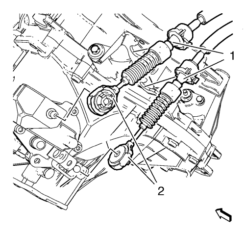
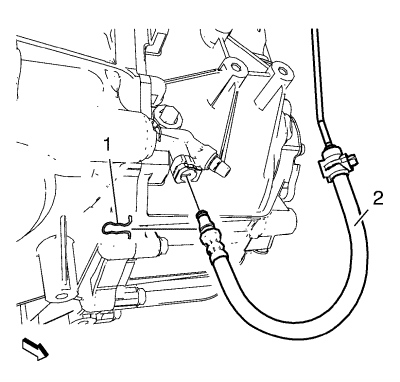
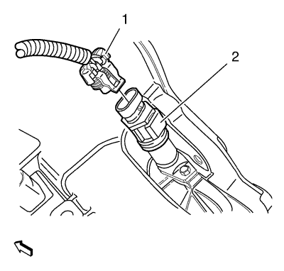
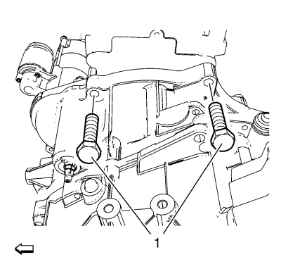
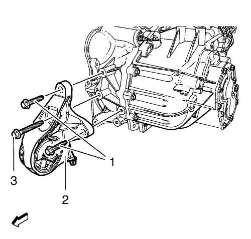
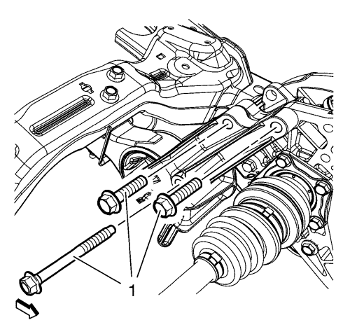
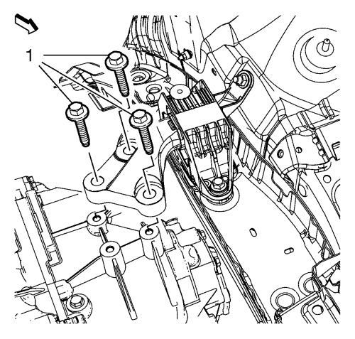
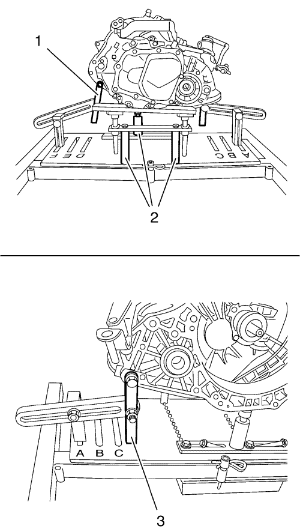
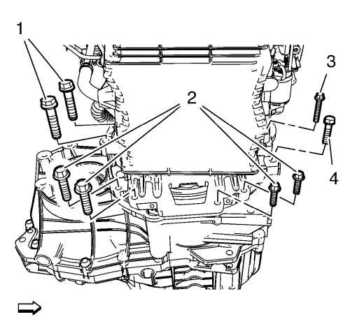

Sustitución de la caja de cambios
Herramientas especiales
| • | DT-47648 Soporte del cambio |
| • | EN-47649 Dispositivo de soporte del motor |
| • | CH-49290 Soporte de motor/cambio |
Si desea informarse sobre herramientas regionales equivalentes, consultar Herramientas especiales .
Procedimiento de desmontaje
- Desmonte la bandeja de la batería. Consultar Sustitución de la bandeja de la batería .

- Desmonte los cables de la palanca de cambio y de la palanca selectora de la palanca de control del cambio (2) y del soporte (1) de los cables de la palanca selectora y la palanca de cambio.

Nota: Antes de desconectar el tubo delantero del actuador del embrague, retire el líquido de embrague/frenos del depósito.
- Quite el seguro del tubo delantero del cilindro actuador del embrague (1).
Desconecte el tubo delantero del cilindro actuador del embrague (2) del codo del tubo del cilindro actuador del embrague.

- Separe el conector eléctrico (1) del engranaje accionado del velocímetro (2).
- Desemborne el conector eléctrico del interruptor de la luz de marcha atrás.

- Desmonte los pernos superiores del cambio (1).
- Monte el dispositivo de soporte EN-47649. Consultar Dispositivo de soporte del motor .
- Elevar el vehículo y soportarlo de manera segura. Consultar Elevación del vehículo con un gato .
- Monte el cambio/motor de montaje CH-49290. Consulte Soporte del motor/cambio
- Desmonte el bastidor de la suspensión delantera y del tren de rodaje. Consultar Sustitución del bastidor de la suspensión delantera y del tren de rodaje .
- Desconecte el semieje de la rueda delantera izquierda de la caja de cambios. Consultar Sustitución del semieje de la rueda delantera - lado izquierdo .
- Desconecte el semieje de la rueda delantera derecha del eje intermedio de accionamiento de la rueda delantera. Consultar Sustitución del semieje de la rueda delantera - lado derecho .
- Desmonte el árbol intermedio de accionamiento de las ruedas delanteras. Consultar Sustitución del semieje intermedio de la rueda delantera .

- Desmonte los pernos (1, 3) del alojamiento frontal del cambio y el alojamiento frontal del cambio (2).

- Desmonte los pernos (1) del soporte del alojamiento del cambio y el soporte del alojamiento del cambio - trasero.
- Desmonte el motor de arranque. Consultar Sustitución del motor de arranque → Diesel 2.0L LNP con MT → Diesel 2.0L LNP con AT → 1.4L LDD, LUH, y LUJ → 1.6L LDE, LXV, 1.8L 2H0 y LUW → 1.6L LXT, L2W → 2.0L Diésel LLW
- Bajar el vehículo.

- Desmonte y DESECHE los pernos del alojamiento del cambio (1).
- Baje el motor y la caja de cambios del lado izquierdo con el dispositivo de soporte EN-47649.
- Elevar el vehículo

- Sitúe la herramienta de retención DT-47648 en el marco CH-904 y premonte los soportes tal y como se muestra en la figura.
- Premonte el soporte de la carcasa del embrague DT-47648-2 (4) en posición 3 sobre la placa base.
- Premonte el soporte de la carcasa del cambio DT-47648-4 (2) en posición 14 sobre la placa base.
- Premonte el soporte DT-47648-5 izquierdo con brazo giratorio de cambio trasero (1) en posición A sobre la placa base.
- Premonte el soporte DT-47648-5 derecho con brazo giratorio de cambio frontal (3) en posición F sobre la placa base.

Nota: Antes de colocarlas en posición, afloje todas las uniones atornilladas de los brazos giratorios y soportes de la placa base. Ajuste los soportes para la carcasa del convertidor y la carcasa del cambio con los husillos hasta que estén lo más bajos posible.
- Acople el soporte DT-47648 a la caja de cambio.
- Alinee la herramienta de retención DT-47648 bajo el cambio.
- Acople los brazos giratorios (1, 3) a la caja de cambios.
Nota: Alinee los brazos giratorios de modo que se cree el mínimo apalancamiento posible.
- Apriete las uniones atornilladas de los brazos giratorios, empezando por la caja de cambios y alcanzando la placa base.
- Posicione los soportes para la carcasa del embrague y la carcasa del cambio en la caja de cambios girando hacia arriba los husillos (2).
- Apriete las uniones atornilladas de los soportes.

- Extraiga los tornillos de cambio (1, 2, 3, 4).
- Separe la caja de cambios del motor.
- Baje la caja de cambio con el gato del cambio y el soporte DT-47648 lo suficiente como para extraer la caja de cambio.
Procedimiento de montaje
- Suba la caja de cambio con el gato del cambio y el soporte DT-47648 y posicione la caja de cambio en el motor.
Precaución: Consulte Precaución con las fijaciones en la sección Prólogo
- Monte los tornillos de cambio (1, 4) y apriételos hasta 75 N·m (56 lib. pie).
Monte los tornillos de cambio (2, 3) y apriételos hasta 50 N·m (37 lib. pie).
- Extraiga el gato del cambio con el soporte DT-47648.
- Bajar el vehículo.
- Suba el motor y la caja de cambios del lado izquierdo con el dispositivo de soporte EN-47649.
- Monte los NUEVOS pernos (1) del alojamiento del cambio pero no los apriete todavía.
- Elevar el vehículo
- Instale el motor de arranque. Consultar Sustitución del motor de arranque → Diesel 2.0L LNP con MT → Diesel 2.0L LNP con AT → 1.4L LDD, LUH, y LUJ → 1.6L LDE, LXV, 1.8L 2H0 y LUW → 1.6L LXT, L2W → 2.0L Diésel LLW .
- Monte el soporte trasero del alojamiento del cambio y apriete los pernos (1) a 100 N·m (74 lib. pie).
- Monte el soporte delantero de la caja de cambios. Consultar Sustitución del soporte de montaje delantero de la caja de cambios .
- Monte el árbol intermedio de accionamiento de las ruedas delanteras. Consultar Sustitución del semieje intermedio de la rueda delantera .
- Conecte el eje de accionamiento de la rueda delantera derecha con el eje intermedio de accionamiento de las ruedas delanteras. Consultar Sustitución del semieje de la rueda delantera - lado derecho .
- Conecte el semieje de la rueda delantera izquierda a la caja de cambios. Consultar Sustitución del semieje de la rueda delantera - lado izquierdo .
- Monte el bastidor de la suspensión delantera y del tren de rodaje. Consultar Sustitución del bastidor de la suspensión delantera y del tren de rodaje .
- Bajar el vehículo.
- Apriete los NUEVOS pernos (1) del alojamiento del cambio y apriételos a 50 N·m + 60°-70° (37 lib. pie + 60°-70°).
- Desmonte la fijación del soporte EN-47649. Consultar Dispositivo de soporte del motor .
- Monte los tornillos de la caja de cambios de la parte superior (1) y apriételos hasta 75 N·m (56 lib. pie).
- Acople el conector eléctrico (1) al engranaje impulsado del velocímetro (2).
- Enchufe el conector eléctrico al interruptor de la luz de marcha atrás.
Nota: El tubo delantero del cilindro actuador del embrague debe enclavarse de manera perceptible.
- Conecte el tubo delantero del cilindro actuador del embrague (2) al codo del tubo del cilindro actuador del embrague.
- Bloquee el retén (1) del tubo delantero del cilindro actuador del embrague.
- Conecte los cables de la palanca de cambio y de la palanca selectora a la palanca de control del cambio (2) y al soporte (1) de los cables de la palanca selectora y la palanca de cambio.
- Ajuste los cables de la palanca de cambio y la palanca selectora. Consultar Ajuste de cables de la palanca selectora y de la palanca del cambio manual .
- Purgue el sistema hidráulico del embrague. Consultar Purga del sistema de embrague hidráulico .
- Compruebe el nivel de aceite del cambio. Consultar Inspección del nivel del aceite del cambio .
- Monte la bandeja de la batería. Consultar Sustitución de la bandeja de la batería .
- Efectúe una prueba de carretera con el vehículo.
| © Copyright Chevrolet. Reservados todos los derechos |